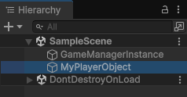
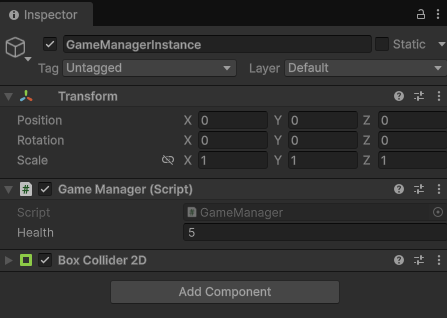
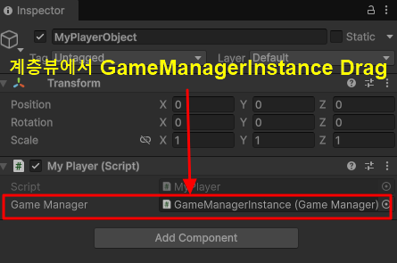

| Inspector에서 오브젝트를 드래그하면 해당 오브젝트에 붙어 있는 컴포넌트가 자동으로 연결된다. 왜 드래그만 하면 자동으로 연결될까? 이유를 알아 보자. 먼저 테스트 환경을 만든다. 1. 계층뷰에서 빈오브젝트로 GameManagerInstance와 MyPlayerObject를 만든다.2. 다음의 GameManager.cs 파일을 GameManagerInstance 오브젝트에 컴포넌트로 추가한다.GameManager.cs 파일using UnityEngine;
public class GameManager : MonoBehaviour { public int health; void Start() { } void Update() { } }  3. 다음의 MyPlayer.cs 파일을 MyPlayerObject 오브젝트에 컴포넌트로 추가한다.MyPlayer.cs 파일using UnityEngine;
public class MyPlayer : MonoBehaviour { public GameManager gameManager; void Start() { gameManager.health = 5; } void Update() { } }  PlayerMove.cs의 변수 타입이 GameManager라면 드래그했을 때 연결되는 것은 GameManager 컴포넌트야. 오브젝트 전체가 아니라 그 안의 특정 컴포넌트가 연결되는 것이다. 실행후 GameManagerInstance 인스펙트 창을 보면 MyPlayer에 의해 Health 값이 5로 설정 되어 있는것을 확인 할수 있다. 결론) Inspector에서 오브젝트를 드래그하면 해당 오브젝트에 붙어 있는 컴포넌트가 자동으로 연결된다. Unity에서는 스크립트의 public 변수 타입을 보고 Inspector가 “어떤 오브젝트를 연결할 수 있는지” 판단한다. ✅ 드래그하면 연결되는 조건: 1. 변수 타입이 컴포넌트여야 함 2. 드래그하는 오브젝트에 해당 컴포넌트가 붙어 있어야 함 3. 변수는 public 또는 [SerializeField]여야 함 그래서 드래그하면 실제로 연결되는 것은 “오브젝트”가 아니라 “컴포넌트” |